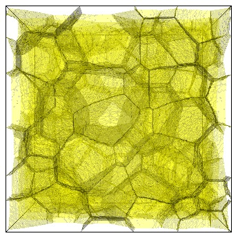
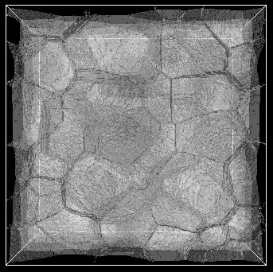

Showing colored and b/w 3D foam (256^3) renderings with opacity=0.2.
Display the foam3D_animated
# renderFoam.py
import sys
import vtk
argc = len(sys.argv)
if (argc < 2):
print 'Usage: renderFoam imagefilename'
exit(-1)
imageFilename = sys.argv[1]
#print 'renderFoam.py: imageFilename = ',imageFilename
ren1 = vtk.vtkRenderer()
#ren1.SetUseDepthPeeling(1)
#ren1.SetOcclusionRatio(0.1)
ren1.SetBackground(0,0,0)
ren1.SetBackground(1,1,1)
renWin = vtk.vtkRenderWindow()
#renWin.SetAlphaBitPlanes(1)
#renWin.SetMultiSamples(1)
renWin.AddRenderer(ren1)
iren = vtk.vtkRenderWindowInteractor()
iren.SetRenderWindow(renWin)
reader = vtk.vtkStructuredPointsReader()
#reader.SetFileName('Step_09950.vtk')
reader.SetFileName('newField.vtk')
aa = vtk.vtkAssignAttribute()
aa.SetInputConnection(reader.GetOutputPort())
#aa.Assign("CellType", "SCALARS", "POINT_DATA")
aa.Assign("CellId", "SCALARS", "POINT_DATA")
#aa.Assign("Cells", "SCALARS", "POINT_DATA")
aa.Update()
#--------------------
cellType = 1
ct1 = vtk.vtkDiscreteMarchingCubes()
ct1.SetInputConnection(aa.GetOutputPort())
#offset = cellType*scaleFactor
offset = 1
#for idx in range(numCellsPerType[cellType]): # rf. numCellsPerType.dat array
#ct1.SetValue(0, 18558)
f = open('uniqueIds.dat','r')
idx = 0
val = int(f.readline())
while (val):
# print 'val=',val
ct1.SetValue(idx, val)
idx += 1
try:
val = int(f.readline())
# val = 0 # to stop after just the first one
except:
val = 0
ncont = ct1.GetNumberOfContours()
print 'ncont=',ncont
#for id in range(ncont):
# cval = c6.GetValue(id)
# print id,' cval=',cval
ct1Mapper = vtk.vtkPolyDataMapper()
ct1Mapper.SetInputConnection(ct1.GetOutputPort())
ct1Mapper.ScalarVisibilityOn()
ct1Mapper.ScalarVisibilityOff()
ct1Actor = vtk.vtkActor()
ct1Actor.SetMapper(ct1Mapper)
ct1Actor.GetProperty().SetColor(1,1,1)
ct1Actor.GetProperty().SetColor(1,1,0)
#actor.GetProperty().SetAmbient(0.5) # yuck
ct1Actor.GetProperty().SetOpacity(0.20)
ren1.AddActor(ct1Actor)
#--------------------------------
outline = vtk.vtkOutlineFilter()
outline.SetInputConnection(reader.GetOutputPort())
outlineMapper = vtk.vtkPolyDataMapper()
outlineMapper.SetInputConnection(outline.GetOutputPort())
outlineActor = vtk.vtkActor()
outlineActor.SetMapper(outlineMapper)
outlineActor.GetProperty().SetColor(1,1,1)
outlineActor.GetProperty().SetColor(0,0,0)
ren1.AddActor(outlineActor)
renWin.SetSize(512,512)
renWin.Render()
w2i = vtk.vtkWindowToImageFilter()
w2i.SetInput(renWin)
jpgw = vtk.vtkJPEGWriter()
jpgw.SetInput(w2i.GetOutput())
jpgw.SetFileName(imageFilename + '.jpg')
jpgw.Write()
# do this if you want an interactive window left up
#iren.Start()
/* foam.c - parse a VTK ascii file and generate 2 new files: newField.vtk and uniqueIds.dat */
#include <stdio.h>
#include <string.h>
/* Vidhya's foam coarsening */
#define NX 256
#define NY 256
#define NZ 256
#define N 16777216
#define MAXTYPES 12
#define MAXIDS 10000
#define MULT 100000
#define FNAME1 "newField.vtk"
#define FNAME_IDS "uniqueIds.dat"
# define HEADER "# vtk DataFile Version 3.0\n\
vtk output\n\
ASCII\n\
DATASET STRUCTURED_POINTS\n\
DIMENSIONS 256 256 256\n\
SPACING 1 1 1\n\
ORIGIN 0 0 0\n\
POINT_DATA 16777216\n\
FIELD FieldData 1\n\
CellId 1 16777216 int\n"
int main(int argc, char **argv)
{
FILE *fp, *fpout, *fpout2;
char line[128];
int idx, jdx, idy,idz, getout;
int numUniqueIds, foundId;
int uniqueIds[MAXIDS];
int cid;
int cellId, cellCount, thisCellVal;
printf("argc=%d\n",argc);
if (argc < 2) {
printf("Usage: parse filename\n");
exit(-1);
}
printf("argv[1]= %s\n", argv[1]);
fp = fopen(argv[1],"r");
fpout = fopen(FNAME1,"w");
fpout2 = fopen(FNAME_IDS,"w");
getout = 0;
while (fgets(line,sizeof(line), fp) != NULL) {
if ( strstr(line, "CellId") ) {
numUniqueIds = 0;
fputs(line,stdout);
fprintf(fpout,"%s",HEADER);
/* fprintf(fpout,"%s",line); */
for (idx=0; idx<N; idx++) {
fscanf(fp, "%d", &cid);
foundId = 0;
for (jdx=0; jdx<numUniqueIds; jdx++) {
if (cid == uniqueIds[jdx]) {
foundId = 1;
break;
}
}
if (!foundId) {
fprintf(fpout2,"%d\n",cid);
uniqueIds[numUniqueIds] = cid;
numUniqueIds++;
if (numUniqueIds >= MAXIDS) {
printf("------- ERROR: exceeded MAXIDS = %d\n", MAXIDS);
exit(-1);
}
}
if (idx < 3) printf("%d %d\n",idx,cid);
fprintf(fpout,"%d ",cid);
if ((idx > 0) && !(idx % 15)) fprintf(fpout,"\n");
}
break; /* exit the outer while after we've read both fields */
}
}
fclose(fp);
printf("--- numUniqueIds= %d\n", numUniqueIds);
fclose(fpout);
printf("---> %s\n", FNAME1);
fclose(fpout2);
printf("---> %s\n", FNAME_IDS);
}
# script to operate all on .vtk files in the current dir.
# In this case, we (1) invoke a C pgm (foam.c) that parses the file and creates newField.vtk, then
# (2) invoke a python script that renders that file to generate the 3D cells.
import sys,os
print 'argc =',len(sys.argv)
print 'argv =',sys.argv
vtkDir = '/Users/heiland/Documents/Glazier/Vidhya'
vtkDir = '/home/vidhya/3-4-2-install/Demos/PythonOnlySimulationsExamples/FoamCoarsening/Foam_Coarsening3D_py_07_22_2010_15_32_29/LatticeData'
#count = 0
for root, dirs, files in os.walk(vtkDir):
for fname in files:
#print fname[-3:]
if (fname[-3:] == 'vtk') and (fname != 'newField.vtk'):
numStr = fname[5:-4]
numVal = int(fname[5:-4]) / 50
#print fname + ', ',numStr,', ',numVal
# imageFile = 'image%04d' % count
imageFile = 'image%04d' % numVal
#print 'imageFile = ',imageFile
# count += 1
cmd = './foam ' + vtkDir+'/'+fname
print cmd
os.system(cmd)
cmd = 'python renderFoam.py ' + imageFile
print cmd
os.system(cmd)
# script to simply loop and construct sequential filenames.
# In this case, we (1) invoke a C pgm (foam.c) that parses the file and creates newField.vtk, then
# (2) invoke a python script that renders that file to generate the 3D cells.
import sys,os
print 'argc =',len(sys.argv)
print 'argv =',sys.argv
vtkDir = '/Users/heiland/Documents/Glazier/Vidhya'
vtkDir = '/home/vidhya/3-4-2-install/Demos/PythonOnlySimulationsExamples/FoamCoarsening/Foam_Coarsening3D_py_07_22_2010_15_32_29/LatticeData'
count = 0
for idx in range(0,9950,50):
fname = 'Step_%05d.vtk' % idx
# imageFile = 'image%04d' % count
imageFile = 'image%04d' % count
#print 'imageFile = ',imageFile
count += 1
cmd = './foam ' + vtkDir+'/'+fname
print cmd
os.system(cmd)
cmd = 'python renderFoam.py ' + imageFile
print cmd
os.system(cmd)
Remote X11 display: On Mac: Quit from X11 if running rm /tmp/.X0-lock rm ~/.Xauthority startx *then* ssh to schenk and verify can do 'xclock': randy@schenk:~$ xclock (no need to do 'xhost +' anywhere!)